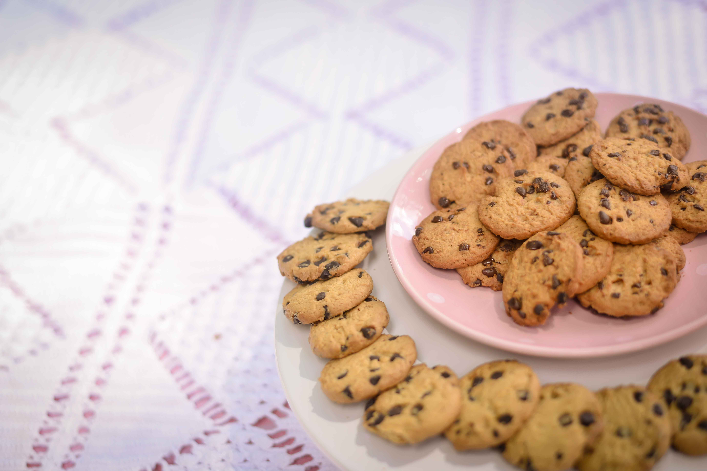

Best Chocolate Chip Cookies
This is the best chocolate chip cookie recipe ever! Simple ingedients, quick to prepare and amazingly delicious. These chocolate chipcookies turn out perfectly every single time!

ingedients
- 1 cup of butter, softened
- cup of white sugar
- 1 cup of packed brown sugar
- 2 large eggs
- 2 teaspoons of vanilla extract
- 1 teaspoons of hot water
- 1/2 teaspoon of salt
- 3 cups of all-purpose flour
- 2 cups of semisweet choclate chips
- 1 cup of chopped walnuts
Directions
- Preheat oven to 350 degrees F ( 175 degrees C ).
- Cream together the butter, white sugar, and brown sugar until smooth. Beat in the eggs one at a time, then stir in the vanilla.Dissolve baking soda in hot water. Add to batter along with salt. Stir in flour, chocolate chips, and nuts. Drop by largespoonfuls onto ungreased pans.
- Bake for about 10 minutes in the preheated oven, or until edges are nicely browned.
Nutrition Facts
Per Serving:
297.8 calories; protein 3.6g 7% DV; carbohydrates 38.9g 13% DV; fat 15.6g 24% DV; cholesterol 35.8mg 12% DV; sodium165.8mg 7% DV.
Back to class website